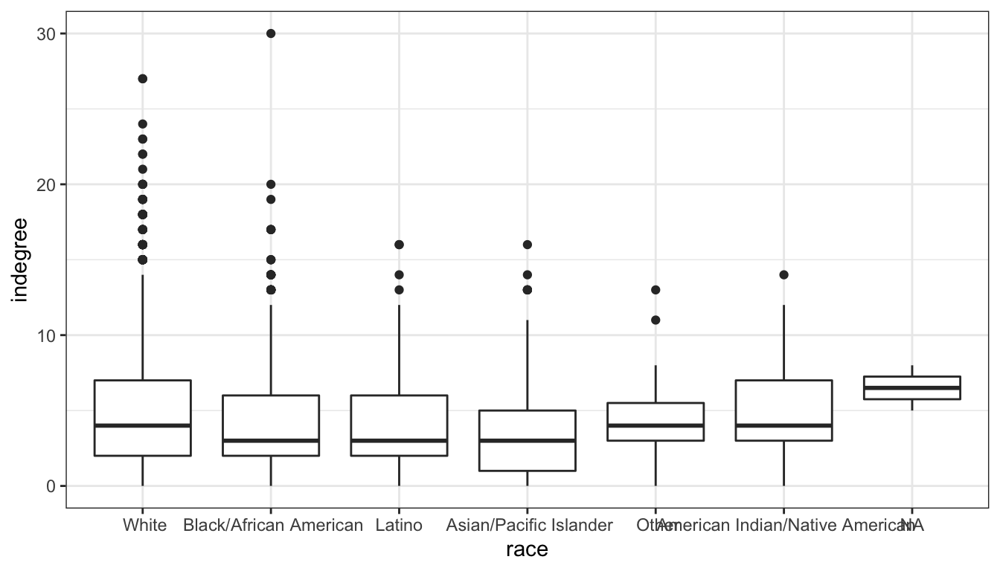

Pretty Pictures
One of the best features of R is the ability to make beautiful graphs. R gives the user an incredible amount of control over exactly how your graphs appear. If you know enough, you can virtually make any graph that you can imagine in your head. This flexibility comes at a cost, however. The curve in learning graphics is quite substantial, because of the number of parameters that can be controlled. Nonetheless, if you intend to do quantitative data analysis, then its well worth the effort. In my opinion, figures are almost always a better way to express a result than a table. If the figure is well-designed it will make your results much more intelligible to a broader audience because you have literally helped them to visualize it.
In this lab, I am going to show you two techniques for plotting in R. First, I am going to show you how to plot things in R using the basic plotting functions, sometimes called “base plot.” Base plotting in R gives you full control over pretty much everything you could want to stick on a canvas, but sometimes it gives you too much control and you can end up fiddling around a lot to get things to look just how you want them to. So, I am also going to show you how to plot in R using the ggplot2 library. ggplot has become so popular as a method of plotting that many people prefer it to base plot. The “gg” in ggplot refers to teh “graphics of grammar.” The basic idea of ggplot is that rather than control everything about your plot, you give R a “grammar” of what data you want to graph, how you want to graph, and how you want to tie aesthetics to the different pieces of data. In future versions of this course, I plan to transition many of the graphs we use to ggplot although most slides are still written in base plot.
There are two different ways you should use pictures in your work. The first method is to use figures to visualize what you data looks like. This is what we have been learning already in class. Histograms, barplots, boxplots, and scatterplots are all examples of trying to visualize your data. Most work on how to make figures is devoted to the topic of visualizing your data like this. However, there is a second way to use pictures, which I think is actually equally important and under-utilized. You can use figures to vizualize your findings. The difference here might not be immediately obvious, partly because we haven’t talked about “models” yet, which is the primary way that results are expressed in quantitative work. Let me give you an example from my own work that may help to communicate what I mean. Here is a figure from an AJS article that shows how to think about the results of a model I ran that tries to predict the number of lynchings in a county by the inequality in occupation between individuals classified as black and mulatto and the inequality between individuals classified as white and mulatto or black (i.e. “African ancestry”).

This is a heat (or topological) map of risk where dark areas indicate greater risk (of lynching). The point was to show that the effect of each variable produces opposite effects depending on the level of the other variable. I am not describing data here, but rather the results of a model of lynching risk that is based on the underlying county-level data.
Since we don’t know much about these types of models yet, we will focus for now on using graphs to describe data. The data we will look at come from one of my current projects. In this project, my colleague (Nicole Marwell) and I have data on social service contracts awarded by the City of New York to non-profit organizations working within the city. The data I am using here are created by aggregating all the money allocated to a particlar health area (a bureaucractic neighborhood boundary in NYC) between the years of 2009 and 2010. We combine that data with data on the poverty rate for each health areas and also divide by the population in a health area to get an estimate of the social service funding per capita. Here is a peak at what the data look like:
## health_area amtcapita poverty unemployed income borough popn
## 1 10110 29.168592 22.77850 11.324410 40287.02 Manhattan 27983.43
## 2 10120 109.451055 22.62417 10.179587 43266.45 Manhattan 20235.00
## 3 10210 216.306532 30.08883 11.616439 29015.87 Manhattan 28688.00
## 4 10221 29.148974 27.16760 17.279031 33987.68 Manhattan 27161.08
## 5 10222 2.422527 12.10421 8.580756 66350.84 Manhattan 13372.73
## 6 10300 506.985063 27.39747 13.606836 32591.55 Manhattan 16035.99
## lincome poverty.z unemployed.z lincome.z deprivation.summated
## 1 10.60378 0.1623016 0.65034173 0.2704751 0.3902136
## 2 10.67513 0.1496155 0.34143111 0.1183988 0.2195641
## 3 10.27560 0.7632204 0.72914069 0.9699954 0.8871098
## 4 10.43375 0.5230918 2.25709249 0.6328925 1.2296246
## 5 11.10271 -0.7151376 -0.08998557 -0.7929740 -0.5757443
## 6 10.39181 0.5419873 1.26621463 0.7222968 0.9116593We have the numeric code of the health area, the amount of funding per capita, the poverty rate as a percentage of the population, a numeric code for borough (Manhattan, Brooklyn, Bronx, Queens, Staten Island), and the population size. You can download this data in the files section of Canvas.
Base Plot
For this example, we are going to use a scatterplot to look at the association between funding per capita and poverty rates. Here is the ultimate figure that we want to end up with:

There is a lot going on in this figure. Lets identify a few of the nifty features:
- dots are color-coded by borough
- the scale of the y-axis is logarithmic which means that an increase of one unit is actually a multiplicative increase of 10 (sort of like the richter scale).
- The size of dots is scaled to the population size of the health area.
- There is a best-fitting line drawn through the points. It looks positive.
- the y-axis has a dollar-sign and commas to make the numbers easier to read and the x-axis has a % marker to make clear the units.
- there are two different legends drawn on the outside margins of the figure.
Thats a lot of stuff. Lets start from the basics and build our way up to this final model. Lets start by just running the basic plot command for a scatterplot:
Ok, thats a lot different. Lets deal with the biggest substantive problem. The amount per capita is so heavily right-skewed that it is difficult to see the relationship because almost all of the data points are “squished” down at the bottom of the y-axis. This can be resolved by using whats called a logarithmic scale such that each tick mark indicates not an additive unit increase on the y-axis but a multiplicative increase. We can do this easily by specifying “y” as an option to the log argument in plot:

Ok, that looks better. This graphical approach is related to the idea of tranformations that we will discuss later in the term. Now we can better see that there is a positive effect. However, the numbers on the y-axis tick-marks look horrible. Instead of using the default tickmarks, I can specify my own axis. A quick check using summary reveals that the maximum amount per capita is $12,290. If I am going up by multiples of ten, the next tick mark above this would be 100,000 (from 10,000, to 100,000). So, I am going to do a few things in the next command. First, I am going to use yaxt="n" to tell R not to draw the default y-axis. Then I am going to use ylim=c(0.1,100000) to specify the upper and lower limits on my y-axis.
Notice that there is now no y-axis tickmarks. I can define those myself with the axis command.
plot(nyc$poverty, nyc$amtcapita,
log="y", yaxt="n", ylim=c(0.1,100000))
axis(2,at=c(0.1,1,10,100,1000,10000,100000), las=1)The 2 argument tells R to draw the axis for the y-axis and the at argument allows me to specify where I want the tick marks. The las argument specifies that I want my tickmark labels to be perpendicular to the axis, for easier reading. There are still a couple of problems with this axis. First, the label for the y-axis is now overlapping with the tickmark labels. Second, the tickmark labels are in an ugly exponential notation. These can both be fixed. First, I can fix the tickmark labels. There are a variety of functions such as paste, format, and formatC which will allow you to turn numbers into pretty well-formatted character strings. In this case, I am going to use those functions to write out the full number with a comma at the thousands place and put a dollar sign in front:
plot(nyc$poverty, nyc$amtcapita,
log="y", yaxt="n", ylim=c(0.1,100000))
axis(2,at=c(0.1,1,10,100,1000,10000,100000), las=2,
labels=paste("$",formatC(c(0.1,1,10,100,1000,10000,100000),
format="d", big.mark=","), sep=""))
I am not going to go over the details of these commands here, but you can see how the tickmark labels are much easier to read now. I still have the problem of the overlapping label for the y-axis and now, the left margin is also not quite large enough for the top label which is being cut-off.
To adjust the margin, let me introduce the par command. The par command can be called before the plot command to set up the parameters of the plot. If you look at the help file for par you will see that there are a huge number of parameters that we can adjust. In our case, we want to adjust the mar argument which is a vector of four numbers defining the size of the bottom, left, top, and right margins, respectively. The default for these is c(5,4,4,2). I will increase the left margin slightly and reduce the right margin since we won’t use it. In addition, I am going to remove the default y label by specifying ylab="".
par(mar=c(5,6,3,1))
plot(nyc$poverty, nyc$amtcapita,
log="y", yaxt="n", ylim=c(0.1,100000), ylab="amount per capita")
axis(2,at=c(0.1,1,10,100,1000,10000,100000), las=2,
labels=paste("$",formatC(c(0.1,1,10,100,1000,10000,100000),
format="d", big.mark=","), sep=""))The final step is to define my own y-axis label. I can do this with the title command. If you look at the help file for the title command, you will see that in addition to telling R which title you want to add, you can specify the number of lines away from the graph for the title, which allows us to control its placement. After experimenting around a bit, I discovered that line=5 looked nice.
par(mar=c(5,6,3,1))
plot(nyc$poverty, nyc$amtcapita,
log="y", yaxt="n", ylim=c(0.1,100000), ylab="")
axis(2,at=c(0.1,1,10,100,1000,10000,100000), las=2,
labels=paste("$",formatC(c(0.1,1,10,100,1000,10000,100000),
format="d", big.mark=","), sep=""))
title(ylab="amount per capita", line=5)The y-axis now looks pretty good. I was able to override the default y-axis with the yaxt="n" and ylab="" arguments to plot and then use the axis and title commands to customize tick marks and labels. Now, I will do the same to the x-axis:
par(mar=c(5,6,3,1))
plot(nyc$poverty, nyc$amtcapita,
log="y", yaxt="n", ylim=c(0.1,100000), ylab="",
xaxt="n", xlim=c(0,60), xlab="Poverty rate")
axis(2,at=c(0.1,1,10,100,1000,10000,100000), las=2,
labels=paste("$",formatC(c(0.1,1,10,100,1000,10000,100000),
format="d", big.mark=","), sep=""))
title(ylab="amount per capita", line=5)
axis(1,at=seq(from=0,to=60,by=10),labels=paste(seq(from=0,to=60,by=10),"%",sep=""))In this case, I didn’t have to define a separate title, because the default x-axis label fits fine. I also don’t need the las command because the default has the correct alignment.
Now that I have my axes well-labeled. I can focus on the actual plot. The default “dots” for scatterplots in R are prety ugly, but there are lots of options for better dots. You can specify the shape and style of the dot with the pch argument in plot. If you use ?points, the help file will give you a list of the numeric codes that correspond to different kinds of dots. I usually use pch=21 because it will give me a circle that has a separate border and fill color. The border color can be specified by the col argument an the fill color can be specified by the bg argument. I can also use the cex option to define the size of the dots (relative to the default of 1). I will use this now to create circles of half the average size with a red fill and a black border.
model <- lm(I(log(nyc$amtcapita))~nyc$poverty)
par(mar=c(5,6,3,1))
plot(nyc$poverty, nyc$amtcapita,
log="y", yaxt="n", ylim=c(0.1,100000), ylab="",
xaxt="n", xlim=c(0,60), xlab="Poverty rate",
pch=21, bg="red", col="black", cex=0.5)
axis(2,at=c(0.1,1,10,100,1000,10000,100000), las=2,
labels=paste("$",formatC(c(0.1,1,10,100,1000,10000,100000),
format="d", big.mark=","), sep=""))
title(ylab="amount per capita", line=5)
axis(1,at=seq(from=0,to=60,by=10),labels=paste(seq(from=0,to=60,by=10),"%",sep=""))
This is now pretty good, but the final touch here is to vary the size of the dots by the size of the health area and the fill color by the borough of the health area. R is very flexible about these types of arguments. If I give a vector of numbers for the size or a vector of colornames for the fill color, R will assume that those colors correspond to the individual dots and will allow for variation in the size and color. For example, lets just feed in population size divided by 10,000 to cex.
par(mar=c(5,6,3,1))
plot(nyc$poverty, nyc$amtcapita,
log="y", yaxt="n", ylim=c(0.1,100000), ylab="",
xaxt="n", xlim=c(0,60), xlab="Poverty rate",
pch=21, bg="red", col="black", cex=nyc$popn/10000)
axis(2,at=c(0.1,1,10,100,1000,10000,100000), las=2,
labels=paste("$",formatC(c(0.1,1,10,100,1000,10000,100000),
format="d", big.mark=","), sep=""))
title(ylab="amount per capita", line=5)
axis(1,at=seq(from=0,to=60,by=10),labels=paste(seq(from=0,to=60,by=10),"%",sep=""))Well, that sort of worked but some of those dots are way too big and some are way too small. The variation in size between health areas is so large that any kind of linear scaling of the population size is going to result in this problem. There are a variety of potential solutions to this, but our earlier use of logarithmic scales suggests an easy one. Logging the population values will allow for differences in size but at a diminishing scale difference. After experimentation, I decided that dividing population size by 3000 and logging with a base of 5 produced good size variation.
par(mar=c(5,6,1,1))
plot(nyc$poverty, nyc$amtcapita,
log="y", yaxt="n", ylim=c(0.1,100000), ylab="",
xaxt="n", xlim=c(0,60), xlab="Poverty rate",
pch=21, bg="red", col="black", cex=log(nyc$popn/3000,5))
axis(2,at=c(0.1,1,10,100,1000,10000,100000), las=2,
labels=paste("$",formatC(c(0.1,1,10,100,1000,10000,100000),
format="d", big.mark=","), sep=""))
title(ylab="amount per capita", line=5)
axis(1,at=seq(from=0,to=60,by=10),labels=paste(seq(from=0,to=60,by=10),"%",sep=""))The final step is to color-code the dots. I could put in a vector of any five colors. However, it is important to think about accessibility for color-blind individuals and whether a color combination will show up well in print. There are many online resources for this sort of thing. I like ColorBrewer. Here I have specified five classes with a diverging scheme that are colorblind and print friendly. I wiould have selected qualitative scale but there are no color-blind options in that category for five classes. ColorBrewer gives me some options with hexadecimal color codes which I can feed into R. I first create a vector of the five color names and then I use the borough index to assign them in my plot command.
color_choices <- c("#ca0020","#f4a582","#f7f7f7","#92c5de","#0571b0")
par(mar=c(5,6,3,1))
plot(nyc$poverty, nyc$amtcapita,
log="y", yaxt="n", ylim=c(0.1,100000), ylab="",
xaxt="n", xlim=c(0,60), xlab="Poverty rate",
pch=21, bg=color_choices[nyc$borough], col="black", cex=log(nyc$popn/3000,5))
axis(2,at=c(0.1,1,10,100,1000,10000,100000), las=2,
labels=paste("$",formatC(c(0.1,1,10,100,1000,10000,100000),
format="d", big.mark=","), sep=""))
title(ylab="amount per capita", line=5)
axis(1,at=seq(from=0,to=60,by=10),labels=paste(seq(from=0,to=60,by=10),"%",sep="")) We are almost there but I also want to add a best-fitting line. Normally, I could do this with the
We are almost there but I also want to add a best-fitting line. Normally, I could do this with the abline command as discussed in the Canvas section on the OLS regression line. However, that won’t work in this case because of the the logarithmic scale on the y-axis. Instead, I can create a sequence of poverty rate values and then based on a model, I can calculate the predicted amount per capita (note that you don’t know how to do this yet, so just hang tight). I can then feed those x and y values into a lines command to draw a line on my plot.
model <- lm(I(log(nyc$amtcapita))~nyc$poverty)
x <- 0:60
y <- exp(model$coef[1])*exp(model$coef[2])^x
par(mar=c(5,6,3,1))
plot(nyc$poverty, nyc$amtcapita,
log="y", yaxt="n", ylim=c(0.1,100000), ylab="",
xaxt="n", xlim=c(0,60), xlab="Poverty rate",
pch=21, bg=color_choices[nyc$borough], col="black", cex=log(nyc$popn/3000,5),
bty="n")
axis(2,at=c(0.1,1,10,100,1000,10000,100000), las=2,
labels=paste("$",formatC(c(0.1,1,10,100,1000,10000,100000),
format="d", big.mark=","), sep=""))
title(ylab="amount per capita", line=5)
axis(1,at=seq(from=0,to=60,by=10),labels=paste(seq(from=0,to=60,by=10),"%",sep=""))
lines(x,y, lwd=3, col="grey20")
I don’t want you to worry to much about the model part. The important feature I want to highlight here is that lines is one of a number of commands that include points, text, and mtext that you can use to later add other stuff to a plot that you have already made. In this case, I have added a straight line. The lwd argument defines the width of the line and the col argument defines the color of the line.
I snuck in one other argument here that made a noticeable change. The argument bty defines how the border is drawn around the overall plot area. By setting this to “n”, I removed the border altogether, which I think gives it a cleaner look.
The last step is to add some legends. Legends can be tricky. The first thing you have to figure out is where to place the legend. In my case, I would rather have the legend in the margin than in the main plot area, but R won’t do this by default. In order to do that, I need to specify an xpd=TRUE argument in the par command to allow writing output to the margins and not just the main plot area. In the legend command itself, I need to make a label for each component of the legend and then I need to specify how each component is identified. Lets start with the legend for boroughs.
model <- lm(I(log(nyc$amtcapita))~nyc$poverty)
x <- 0:60
y <- exp(model$coef[1])*exp(model$coef[2])^x
par(mar=c(5,6,3,1), xpd=TRUE)
plot(nyc$poverty, nyc$amtcapita,
log="y", yaxt="n", ylim=c(0.1,100000), ylab="",
xaxt="n", xlim=c(0,60), xlab="Poverty rate",
pch=21, bg=color_choices[nyc$borough], col="black", cex=log(nyc$popn/3000,5),
bty="n")
axis(2,at=c(0.1,1,10,100,1000,10000,100000), las=2,
labels=paste("$",formatC(c(0.1,1,10,100,1000,10000,100000),
format="d", big.mark=","), sep=""))
title(ylab="amount per capita", line=5)
axis(1,at=seq(from=0,to=60,by=10),labels=paste(seq(from=0,to=60,by=10),"%",sep=""))
lines(x,y, lwd=3, col="grey20")
lg <- legend(0, 100000,
legend=c("Manhattan","Bronx","Brooklyn","Queens","Staten Island"),
pch=21, col="black", pt.bg=color_choices, ncol=5,
cex=0.45, pt.cex=1.2, yjust=5)The first two arguments to legend give the x and y placement. The legend argument to legend (I know, its weird) gives the labels for the legend components. The pch argument tells the legend that I am using points and what their shape is. The col argument gives the border color for these points and the pt.bg argument gives their fill color. The ncol tells the legend to use five separate columns rather than a vertical alignment all in one column. The cex and pt.cex arguments indicate the size of the overall legend and the size of the dots, respectively. The yjust argument allows me to fudge the placement to get it just right.
Notice, that I saved the output of legend to an object that I called lg. This is a very useful feature of plots. I want to draw my next legend for health area size next to this first legend, but I have no idea exactly how big the first legend will be, so its hard to know at what value of x to start it. I could guess a number here, but that might also change if I rescale the figure manually. However, if I look at the lg object, the information I am looking for is returned there:
## $rect
## $rect$w
## [1] 33.53141
##
## $rect$h
## [1] 0.486
##
## $rect$left
## [1] 0
##
## $rect$top
## [1] 3.056
##
##
## $text
## $text$x
## [1] 1.562143 8.190318 14.818492 21.446667 28.074842
##
## $text$y
## [1] 2.813 2.813 2.813 2.813 2.813In this specific case, I am looking for lg$rect$w which gives the width of the first legend. I can use that to set up the placement of my second legend:
model <- lm(I(log(nyc$amtcapita))~nyc$poverty)
x <- 0:60
y <- exp(model$coef[1])*exp(model$coef[2])^x
par(mar=c(5,6,3,1), xpd=TRUE)
plot(nyc$poverty, nyc$amtcapita,
log="y", yaxt="n", ylim=c(0.1,100000), ylab="",
xaxt="n", xlim=c(0,60), xlab="Poverty rate",
pch=21, bg=color_choices[nyc$borough], col="black", cex=log(nyc$popn/3000,5),
bty="n")
axis(2,at=c(0.1,1,10,100,1000,10000,100000), las=2,
labels=paste("$",formatC(c(0.1,1,10,100,1000,10000,100000),
format="d", big.mark=","), sep=""))
title(ylab="amount per capita", line=5)
axis(1,at=seq(from=0,to=60,by=10),labels=paste(seq(from=0,to=60,by=10),"%",sep=""))
lines(x,y, lwd=3, col="grey20")
lg <- legend(0, 100000,
legend=c("Manhattan","Bronx","Brooklyn","Queens","Staten Island"),
pch=21, col="black", pt.bg=color_choices, ncol=5,
cex=0.45, pt.cex=1.2, yjust=-0.7)
legend(lg$rect$w*1.05, 100000,
legend=c("5000 people","50,000 people","100,000 people"),
pch=21, col="black",pt.bg="grey",ncol=3,
pt.cex=log(c(5000,50000,100000)/3000, 5),
yjust=-0.7, cex=0.45)
And there is the final product. Keep in mind that some of the final touches here are fairly complex. I am not expecting you to be able to produce graphs of this complexity tomorrow. The goal was to show you the richness and depth of graphing in R and to give you some reference points for beginning to build your own beautiful graphs.
The plot function is one of the most basic functions for creating plots and once you get the basics down you can create a wide variety of two-dimensional plots. However, there are a variety of other functions that will draw more specific plots. We have already seen examples of pie, barplot, hist, and boxplot. Most of the options for customization that are available for plot are also available for these other functions. For example, in the code here I use the text function to plot the actual percentage values at the top of my bars for a barplot of movie maturity rating and to create lines for the y-axis at 10% intervals.
percent <- round(100*table(movies$Rating)/sum(table(movies$Rating)),1)
b <- barplot(percent, las=1, ylab="Percent", ylim=c(0,50), col="salmon")
text(b[,1], percent+2, paste(percent, "%", sep=""))
abline(h=seq(from=10,to=50,by=10), lwd=0.5, col="grey80", lty=2)
Another useful command that we haven’t learned yet is matplot which is short for matrix plotting. The matplot function will plot the values of one dimension of the matrix across the indices of the other dimension. This allows you to plot, for example, trend lines separately by different categories. Lets try it out by plotting the time trend in movie runtime separately by maturity rating. The first step in doing this is to calculate the mean of movie runtime by year and maturity rating using the tapply command.
## Rating
## Year G PG PG-13 R
## 2001 89.20000 101.43750 105.1667 107.1744
## 2002 92.66667 97.42308 107.0139 104.3974
## 2003 75.40000 96.08333 109.7143 108.1692
## 2004 93.00000 99.65714 106.2027 105.8769
## 2005 84.83333 100.76471 109.6024 107.8659
## 2006 93.85714 99.30233 107.2118 109.6282
## 2007 99.66667 99.37931 104.7324 107.8900
## 2008 91.44444 101.50000 105.8750 106.4935
## 2009 99.33333 98.24242 107.8481 104.1071
## 2010 103.00000 101.79412 109.4559 102.1495
## 2011 89.33333 100.84000 109.3297 101.5098
## 2012 88.00000 99.87500 109.4400 103.1043
## 2013 104.00000 100.81250 112.7971 103.4904Now, I can feed this matrix into matplot to see the trend across time. In this case, I am going to leave off NC-17 and Unrated because the small number of movies here makes these measures very noisy.

One interesting trend is that PG-13 movies have become longer than R movies, mostly because the runtime of R movies has gotten progressively smaller since 2006. G movies are also getting slight longer over time, but its highly variable from year to year.
I could have also created this plot with the basic plot command and some lines commands, like so:
plot(-1,-1, xlab="year", ylab="mean movie runtime", las=1,
xlim=c(2001,2013), ylim=c(70,120), bty="n")
lines(2001:2013, tab[,1], lwd=2, col="green")
lines(2001:2013, tab[,2], lwd=2, col="blue")
lines(2001:2013, tab[,3], lwd=2, col="purple")
lines(2001:2013, tab[,4], lwd=2, col="red")
legend(2001, 120, legend=c("G","PG","PG-13","R"), lty=1, lwd=2,
col=c("green","blue","purple","red"), ncol=4, cex=0.7)The plot command here basically creates an empty canvas because I give a single point coordinate (-1,-1) that is outside the range of my xlim and ylim values. I can then use the lines command to write specific lines onto this blank canvas.
ggplot
Now, I want to show you how to plot that same scatterplot of non-profit funding in NYC using ggplot.
Ggplot builds up a graph from layers. The first and most essential component is the function ggplot where I indicate the data I am using and the aesthetics that I want to be carried through to all of the other layers:
This command does not actually plot anything yet. It just sets up the basic structure of my plot by identifying the dataset and that I will use poverty as my x variable and amtcapita as my y variable. I then can add layers to this basic command using the “+” sign. For example, if I wanted to create a scatterplot by plotting points:
Now, I have a basic (and very ugly) scatterplot that is similar to what I started with in base plot. I can now add a variety of layers to that start to make a better graph. There are three types of layers I can add:
geoms- these are a variety of geometric patterns such as points, bars, lines, etc.- The
coordsthat define the coordinate system used to plot the values. We typically won’t futz around with this much because everything is drawn on a Cartesian coordinate system, but it can be useful for maps and some other things. scales- these indicate how I want the scales of my various aesthetics to work. This can include the scaling of my x and y variables, but also things like color gradiations.labels- I can identify labels and themes to use.
For example, let me use the scale_y_log10() function to re-scale my y-axis to a logarithmic basis:
That looks better. Notice that I also gave the scale_y_log10 command an argument of labels. This argument identifies the specific labels I want to use for the tick mark. In this case, I am supplying a function from the scales library that turns raw numbers into formatted dollar amounts.
From here I can add a variety of layers and aesthetics to enrich my graph. Let me first add aesthetics for color and size. I will also tranform borough into a proper factor variable so it displays more nicelyin the legend.
ggplot(nyc, aes(x=poverty, y=amtcapita, size=popn, color=borough))+
geom_point(alpha=0.7)+
scale_y_log10(labels=dollar)+
scale_color_brewer(palette="Dark2")+
theme_bw()
By just adding in the borough and pop size as aesthetics, the graph was quickly adjusted. I didn’t have to fiddle around with exact sizing of the dots. Ggplot handled those details. Note that I also added a scale for the color using one of ggplot’s pre-defined palettes. I also used the argument of alpha=0.7 to add some transparency to points, which helps me deal with issues of overplotting. Finally, I used theme_bw() at the bottom to change to a black and white theme.
I also want to add a line for the best-fitting OLS regressin line. The geom_smooth function will allow me to do this, although I will have to specify the method:
ggplot(nyc, aes(x=poverty, y=amtcapita))+
geom_point(alpha=0.7, aes(color=borough, size=popn))+
geom_smooth(method="lm", color="black", se=FALSE)+
scale_y_log10(labels=dollar)+
scale_color_brewer(palette="Dark2")+
theme_bw()I made a couple of important changes here that are quite subtle but important. First, I moves the aesthetics for color and size out of the ggplot command and put them into the geom_point. This is because I don’t want those aesthetics to apply to all geoms. I only want them to apply to geom_point. If I had left them in they would have affected the geom_smooth and we would have had five separate lines for each borough.
I also added color="black" to the geom_smooth command. Note that this is not part of an aesthetic call (e.g. aes()). It is not considered an aesthetic because we are just asking for the line to be a single color. Try surrounding that command in an aes and see what happens.
I also used the se=FALSE. If I don’t do this then the line above will be surrounded by a confidence band, which may be good or bad. For our purposes, I did not want to clutter the graph.
We are now pretty close to being complete, but I still need to label all of my axes and provide a title. I also want better labeling for the two legends. This can all be done with the labs command which we append to the entire plot:
ggplot(nyc, aes(x=poverty/100, y=amtcapita))+
geom_point(alpha=0.7, aes(color=borough, size=popn))+
scale_x_continuous(label=percent)+
geom_smooth(method="lm", color="black", se=FALSE)+
scale_y_log10(labels=dollar)+
scale_color_brewer(palette="Dark2")+
theme_bw()+
theme(legend.position="right")+
labs(x="poverty rate",
y="amount per capita",
title="Non-profit funding to NYC health area by poverty rate",
caption="Data from NYC, 2009-2010",
color="Borough",
size="Population")
I did a couple of other things here as well. I added a scale_x_continuous so I could label the x tick mark labels as percents. I also added another theme command that would allow me to change the placement of the legends. I want to keep it on the right, but could have chosen “left”, “right”, “top”, or “bottom.”
We now have a very nice looking graph. Ggplot can be a little overwhelming at first, but it has quite a few advantages over base plot. It is designed so that we have to fidget around less with things like the size of our labels, the exact placement of our legends, and the margins of our table. All of that just works internally, and we can focus on the “grammar of graphics”, i.e. the logic structure of what we are trying to say with our graph.
Lets do one more example to show how flexible ggplot is. Lets look at the distribution of popularity by race in the Add Health data. Because we have one categorical and one quantitative variable, we want comparative boxplots. Here is our basic set up:

That works pretty well, However, its often better to display these boxplots horizontally so that we don’t have to worry about category labels overlapping. We can do that with ggplot with the coord_flip command (an example of a coordinate layer):

This is already pretty good. Notice that I don’t have to worry about specifying margins to make sure my category labels fit. Ggplot does that for me. I just need to apply labels and maybe a bit of tint to my boxplots.
ggplot(addhealth, aes(x=race, y=indegree))+
geom_boxplot(fill="grey70")+
coord_flip()+
theme_bw()+
labs(x=NULL,
y="Number of friend nominations received",
title="Comparative boxplots of friend nominations by race",
caption="Add Health data, Wave 1")
Note that the labels for x and y refer to the logic decision of which value is x and y as defined in the aesthetics not the actual placement, which was reversed due to the coord_flip. Note also that I used NULL for the x label because the category labels and title are self-explanatory.
There are also some more advanced geoms that do something similar to a boxplot. A popular one is the geom_violin which plots a mirror image of the density distribution. With ggplot, its as simple as swapping out my boxplot with the violin:
ggplot(addhealth, aes(x=race, y=indegree))+
geom_violin(fill="grey70")+
coord_flip()+
theme_bw()+
labs(x=NULL,
y="Number of friend nominations received",
title="Comparative boxplots of friend nominations by race",
caption="Add Health data, Wave 1")I encourage you to explore the online ggplot documentation. I would also highly recommend Kieran Healy’s new book, Data Visualization which uses ggplot extensively if you want to learn more about using ggplot most effectively.